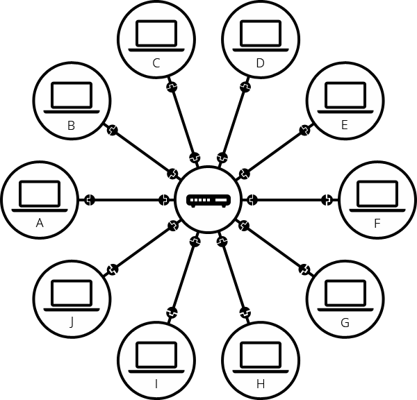

Overview
The internet is a global network of connected devices and computers that share information and services. It began as a US military research project in the 1960s and, by the 1980s, became public infrastructure through public universities and private companies. Thanks to the internet, computers can communicate to faraway networks, this allows us to access the web, game, communicate, etc.
A computer network could look something like this, all of the devices at the location are connected to a network device. Either through an ethernet cable or wirelessly through Wi-Fi.
